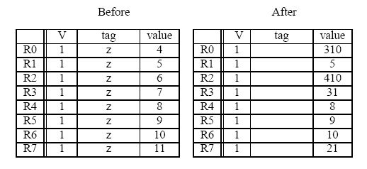
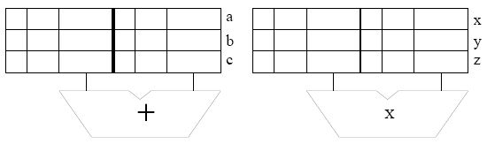
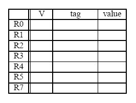

-->
Given the following code:
MUL R3, R1, R2
ADD R5, R4, R3
ADD R6, R4, R1
MUL R7, R8, R9
ADD R4, R3, R7
MUL R10, R5, R6
Note: Each instruction is specified with the destination register first.
Calculate the number of cycles it takes to execute the given code on the
following models:
- A non-pipelined machine.
- A pipelined machine with scoreboarding and five adders and five multipliers.
- A pipelined machine with scoreboarding and one adder and one multiplier.
Note: For all machine models, use the basic instruction cycle as follows:
- Fetch (one clock cycle)
- Decode (one clock cycle)
- Execute (MUL takes 6, ADD takes 4 clock cycles). The multiplier and the adder are not pipelined.
- Write-back (one clock cycle)
Do not forget to list any assumptions you make about the pipeline
structure (e.g., data forwarding between pipeline stages). Infact, we encourage
you to solve the above mentioned questions with data forwarding as well, but,
you are not required to do so.
Suppose we have the following loop executing on a pipelined LC-3b machine.
DOIT STW R1, R6, #0
ADD R6, R6, #2
AND R3, R1, R2
BRz EVEN
ADD R1, R1, #3
ADD R5, R5, #-1
BRp DOIT
EVEN ADD R1, R1, #1
ADD R7, R7, #-1
BRp DOIT
Assume that before the loop starts, the registers have the following
decimal values stored in them:
| Register | Value |
|---|
| R0 | 0 |
| R1 | 0 |
| R2 | 1 |
| R3 | 0 |
| R4 | 0 |
| R5 | 5 |
| R6 | 4000 |
| R7 | 5 |
The fetch stage takes one cycle, the decode stage also takes one cycle, the execute stage takes
a variable number of cycles depending on the type of instruction (see below), and the store stage takes one cycle.
All execution units (including the load/store unit) are fully pipelined and
the following instructions that use these units take the indicated number of
cycles:
| Instruction | Number of Cycles |
|---|
| STW | 3 |
| ADD | 3 |
| AND | 2 |
| BR | 1 |
Data forwarding is used wherever possible. Instructions that are
dependent on the previous instructions can make use of the results
produced right after the previous instruction finishes the
execute stage.
The target instruction after a branch can be fetched when the
BR instruction is in ST stage. For example, the execution of an ADD instruction followed by a BR would look
like:
ADD F | D | E1 | E2 | E3 | ST
BR F | D | - | - | E1 | ST
TARGET F | D
The pipeline implements “in-order execution.” A scoreboarding scheme is used
as discussed in class.
Answer the following questions:
How many cycles does the above loop take to execute if no branch prediction is used?
How many cycles does the above loop take to execute if all branches are predicted with 100% accuracy.
How many cycles does the above loop take to execute if a static BTFN (backward taken-forward not taken) branch prediction scheme is used to predict branch directions? What is the overall branch prediction accuracy? What is the prediction accuracy for each branch?
A five instruction sequence executes according to Tomasulo's
algorithm. Each instruction is of the form ADD DR,SR1,SR2 or MUL
DR,SR1,SR2. ADDs are pipelined and take 9 cycles
(F-D-E1-E2-E3-E4-E5-E6-WB). MULs are also pipelined and take 11 cycles (two
extra execute stages). The microengine must wait until a result is in
a register before it sources it (reads it as a source operand).
The register file before and after the sequence are shown
below (tags for “After” are ignored).

-
Complete the five instruction sequence in program order in the space below.
Note that we have helped you by giving you the opcode and two source operand
addresses for instruction 4. (The program sequence is unique.)

-
In cycle 1 instruction 1 is fetched. In cycle 2,
instruction 1 is decoded and instruction 2 is fetched. In cycle 3,
instruction 1 starts execution, instruction 2 is decoded, and
instruction 3 is fetched.
Assume the reservation stations are
all initially empty. Put each instruction into the next available
reservation station. For example, the first ADD goes into “a”. The
first MUL goes into “x”. Instructions remain in the reservation
stations until they are completed. Show the state of the reservation
stations at the end of cycle 8.
Note: to make it easier for the grader, when allocating source registers
to reservation stations, please always have the higher numbered register be
assigned to SR2.

-
Show the state of the Register Alias Table (V, tag, Value) at the end of
cycle 8.
